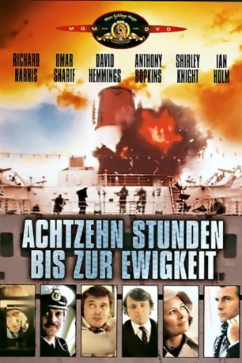

#9050 18 Stunden bis zur Ewigkeit
Alternativ: Juggernaut
 
 IMDB-Wertung: 6.6 / 10
IMDB-Wertung: 6.6 / 10  Metascore: 0
Metascore: 0 
Angst und Panik herrschen auf dem Luxus-Dampfer „Britannic“. Ein Wahnsinniger hat sieben Bomben auf dem Schiff deponiert und droht diese zu zünden, falls ihm die Schiffsgesellschaft nicht drei Millionen auszahlt. Zur Bekräftigung seiner Forderungen detoniert eine Sprengstoffkapsel. Von nun an beginnt ein dramatischer Wettlauf, den der zu Hilfe geholte Bombenexperte Fallon in letzter Sekunde für sich entscheiden kann.
Jahr: 1974
Dauer: 110 Minuten
FSK: 12
Land: England Studio: MGM Home EntertainmentTonspuren: DD5.1 - ,
Untertitel:
Auflösung: 1080p (1920x1040) Größe: 7833 MB
Genre: Action, Thriller, Drama
Regisseur: Richard Lester
Drehbuch: Richard Alan Simmons
Soundtrack: Ken Thorne
Darsteller:
 Richard Harris als Lt. Cmdr. Anthony Fallon
Richard Harris als Lt. Cmdr. Anthony Fallon Omar Sharif als Captain Alex Brunel
Omar Sharif als Captain Alex Brunel David Hemmings als Charlie Braddock
David Hemmings als Charlie Braddock Anthony Hopkins als Supt. John McCleod
Anthony Hopkins als Supt. John McCleod Shirley Knight als Barbara Bannister
Shirley Knight als Barbara Bannister Ian Holm als Nicholas Porter
Ian Holm als Nicholas Porter Clifton James als Corrigan
Clifton James als Corrigan Roy Kinnear als Social Director Curtain
Roy Kinnear als Social Director Curtain Freddie Jones als Sidney Buckland
Freddie Jones als Sidney Buckland Julian Glover als Commander Marder
Julian Glover als Commander Marder Jack Watson als Chief Engineer Mallicent
Jack Watson als Chief Engineer Mallicent Roshan Seth als Azad
Roshan Seth als Azad Kenneth Colley als Detective Brown
Kenneth Colley als Detective Brown Andy Bradford als 3rd Officer Jim Hardy
Andy Bradford als 3rd Officer Jim Hardy- John Bindon als Driscoll
- Tom Chadbon als Juggernaut's Contact
 Kenneth Cope als Bridgeman
Kenneth Cope als Bridgeman- Kristine Howarth als Mrs. Buckland
- Victor Lucas als Detective
- Paul Luty als Clerk
- Simon MacCorkindale als No.1 Helmsman
- Doris Nolan als Mrs. Corrigan
- Gareth Thomas als Liverpool Joiner
 Cyril Cusack als Major O'Neill (uncredited)
Cyril Cusack als Major O'Neill (uncredited) Michael Hordern als Mr. Baker (uncredited)
Michael Hordern als Mr. Baker (uncredited)- Caroline Mortimer als Susan McCleod
- Mark Burns als Hollingsworth
- John Stride als Hughes
- Paul Antrim als Digby
- Ben Aris als The Walker
- Adam Bridge als David McCleod
- Rebecca Bridge als Nancy McCleod
- Michael Egan als Mr. Fowlers
- Freddie Fletcher als 2nd Radio Officer
- Terence Hillyer als Menzies
- Barnaby Holm als Christopher Porter
- Eric Mason als 2nd Detective
- Michael Melia als Navigator
- Richard Moore als Junior Officer
- Rosamund Nelson als Clerk at the Air Terminal
- John Pennington als Passenger
- David Purcell als 1st Detective
- Martyn Read als Kelsey
- Liza Ross als Laura Kellogg
- Bob Sessions als Jerry Kellogg
- Howard Southern als Detective Skinner
- Ian Talbot als Naval Technician
- Colin Thatcher als Henning
- Steven Longhurst als Man (uncredited)
- Louie Ramsay als Character (uncredited)
Datei: X:\1974\18 Stunden bis zur Ewigkeit (1974, FSK12, 1920x1040).mkv seit 19.07.2018
Festplatte: HD 1971-1979
 Es gibt insgesamt 33 Filme in der Gruppe '1974'
Es gibt insgesamt 33 Filme in der Gruppe '1974'